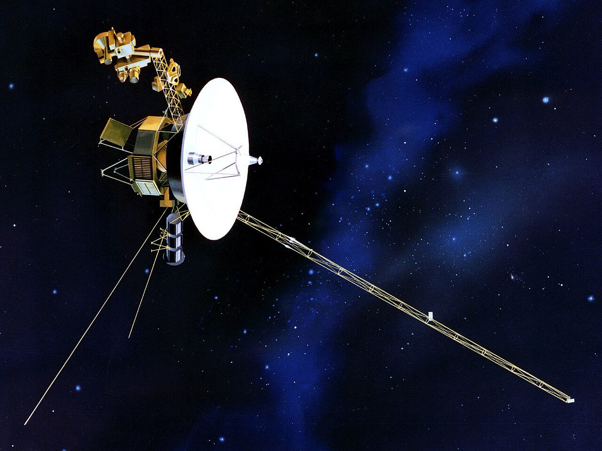

¡Voyager 1 habría alcanzado un día luz de distancia!
El programa espacial Voyager sumó un hito histórico. La NASA calculó que la sonda Voyager 1 se encuentra a una distancia de la Tierra cercana a un día luz, algo que nunca había logrado otra nave construida por seres humanos. Reuters informó que el objetivo ya se habría alcanzado con base en los cálculos de navegación de la agencia.
Un día luz es una medida de distancia: representa lo que recorre la luz en veinticuatro horas. Por eso, una señal de radio enviada a la sonda puede tardar casi un día en llegar y otro tanto en regresar con una respuesta. Esta separación obliga a diseñar procedimientos de comunicación y funcionamiento que soporten retrasos enormes.
Voyager 1 partió de la Tierra en 1977 y continúa su trayectoria por el espacio interestelar. El nuevo logro ilustra la duración del proyecto científico y la capacidad de mantener instrumentos humanos funcionando a distancias extraordinarias. NASA ha invitado al público a celebrar esta exploración con señales luminosas simbólicas.
 NASA / REUTERSFuente original y ampliación
NASA / REUTERSFuente original y ampliación ASSOCIATED PRESS
ASSOCIATED PRESS